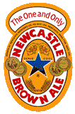
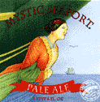
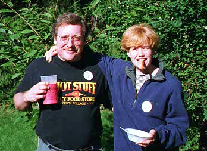
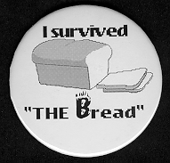

Good Nutrition is Everybody's Business! |
As every true gourmet knows, there are four Major Food Groups: Beer, Chile, Garlic and Cigars. This page is presented as a public service to those who wish to explore the ramifications of a truly balanced diet.
"The human race, to which so many of my readers belong, has been playing at children's games from the beginning, and will probably do it till the end, which is a nuisance for the few people who grow up. And one of the games to which it is most attached is called, ``Keep tomorrow dark,'' and which is also named (by the rustics in Shropshire, I have no doubt) ``Cheat the Prophet.'' The players listen very carefully and respectfully to all that the clever men have to say about what is to happen in the next generation. The players then wait until all the clever men are dead, and bury them nicely. Then they go and do something else. That is all. For a race of simple tastes, however, it is great fun."G. K. Chesterton
If I abstain from fun and such.
I'll probably amount to much;
But I shall stay the way I am.
Because I do not give a damn.
Dorothy Parker
Please don't forget to sign the
[Guest book no longer available]
BEER!
|
Wearing out life's evening gray; Strike thy bosom, Sage! and tell What is bliss, and which the way? Thus I spoke, and speaking sigh'd, Scarce repress'd the starting tear, When the hoary Sage reply'd, "Come, my lad, and drink some beer." Samuel Johnson | ||
 |
St. James's Gate (Guinness - Official) Guinness American Mirror The Guide to Guinness Maine Beer Page Connecticut Brew Pubs The WWWeb Virtual Library: Beer The Real Beer Page Beer Review Links Brewpub Finder Clint's Beer Facts Fogcutter's Homepage Breweries On Line Shipyard Brewery Kat'z Saloon - Beer Reviews Irish Pubs In Boston The Green Dragon Tavern |
 | |
 |  | ||
Visit The Yahoo! Beer Pages
It was early last December, as near as I remember
I was walking down the street in tipsy pride.
No one was I disturbing, as I lay down by the curbing
And a pig came up and lay down by my side
As I lay there in the gutter, thinking thoughts I cannot utter,
A lady passing by was heard to say
"You can tell a man who boozes by the company he chooses"...
And the pig got up and slowly walked away.

 CHILE!
CHILE!
"I think continually of those who were truly great-
The names of those who in their lives fought for life...
Who wore at their hearts the fire's centre."
Stephen Spender
Check out the Unofficial, Politically Incorrect ChileHead Theme Song
Or Celebrate the High Holiday With
 Twas the Night Before Chilemas
Twas the Night Before Chilemas
WILDLIFE!
CHILEHEADS!
Web Page |
 |
(Everyone needs a Hero) |
(Waddayamean which is which?)
He's Cool...He's Swave...He's Rated PG!
It's Br'er Rael Online!
Photographs of the June, 1997 Concord, Massachusetts
Hot Luck hosted by Jim and Linda McGrath.
Caution: These are BIG pictures and they
take a while to load even with only 3 pics to the page.
See Mark Steven's Pics of:
Hot Luck 97 Part Deux held in September
and
The Food/Wine List and ChileHeads FoodStock
held the night before.
(Mark's Pics are temporarily off line.
Apparently he tripped over the power cord
and the State of Noo Joisey went dark)
THE METAPHYSICS OF CHILE!
Transcendental Capsaicinophilic Society
You Know You're a Chile-head if...
The Trigeminal Response Page
CHILI!
Note: Chile is the pepper (or the country). Chili is the meat and pepper stew. Those found guilty of misapplication of vowels will be force fed a spoonful of each. 'Cept card carrying ChileHeads and Mississippi Hendrix fans who would do it on purpose...and then complain they weren't hot enough.
Garry's Chili Pot
Texas Online: Recipes - Chili
Wayne Preston Allen's Chili Page
International Chili Society
And, of course:
Greetings From Northeast Texas!
Kit Anderson's Connecticut-Free (Hmmmmmpf!) New England Chili Page
REGIONAL and ETHNIC CHILE CUISINE!
Garry's Home Cookin'
Judy Howle's Flavors of the South
Muoi Khuntilanont's Kitchen - Thailand
Muoi Khuntilanont's Kitchen (American Mirror)
The Overstreets Cooking Page (Cajun and Southern)
The Curry House Homepage
Mexico Hot!
SOURCES!
Tough Love Chili Co. Bookstore
My personal favorites (standard disclaimers) are:
Jim Campbell's Mild to Wild Pepper & Herb Co.
Home of THE BREAD
Curt & Susie Snyder's Hot's Desire
Creators of the World Famous "I Survived The Bread" Buttons.
They materialized a case of Bufalo Chipotle Sauce when all others failed.
|  |


How to Light Your Barbecue Grill
|
websites. To visit other sites in the ring, click on one of these links. , , , , ,
Click for information on how to join the ring |
|
been a Card Carrying ChileHead? Well, here's your chance! For more information on how to Join this Exclusive Society: EMail to: Bigtom3946@aol.com or drop in at his Home Page |
GARLIC!
"Wel loved he garlek, onions, and eek leekes, Wily Olde Geoffrey |
Garlic @ Christopher Ranch In Praise Of Garlic Garlic The Garlic Store |
CIGARS!
"If there are no cigars in Heaven, I shall not go." Mark Twain |
Fuji Publishing Group Cigar Page Links to Other Cigar Pages Cigarsmokers.com Keith G. Cochran's Cigar Page Cigar store search Cigar Sites on the Web |
"Health nuts are going to feel stupid one day, lying in the hospital, dying of nothing."
Redd Foxx
| Words of Wisdom from Rudyard Kipling |
Found a Great Site that I missed?
Please let me know about it.
"The World would be a better place for children if the parents had to eat the spinach."
Captain Geoffrey T. Spaulding
This Page Has Been Validated (Except for the Table Colors)
For Use With:


Netscape Navigator 3.0 - Microsoft Internet Explorer - HTML Version 3.2